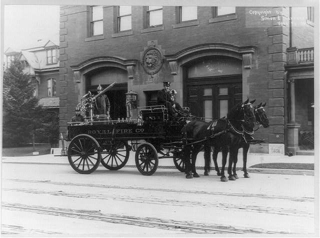
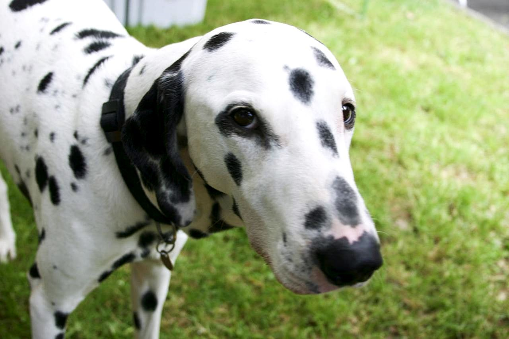

Why Dalmatian Fire Safety? How the name came about
Dalmatian Fire Safety wasn't the first name I tried. It was my children's idea, and it fitted the work better than I expected.
How the name came about
When I started setting the business up, I needed a name. I went through a long list, mostly animals, as they are loved by the whole family. Each time I settled on one, the domain was already taken.
In the end I decided to use my own name. When I told the family, my kids said, "No!" They asked for some time to think about it.
Later that evening I asked if they'd come up with anything. "What about Dalmatian?" they said. "It's a classic fire dog."
I wasn't sure, so I looked it up, and they were right. Then it clicked. Years ago they loved Paw Patrol, and the fire dog in that is a Dalmatian.
The domain was available, so I bought it there and then, and Dalmatian Fire Safety was born.3
Why Dalmatians were fire dogs
Before fire engines had motors, they were pulled by horses. Dalmatians were used as carriage dogs by firefighters, and because Dalmatians and horses get on well, the dogs were easily trained to run in front of the carriages.1

Photo: Simon & Murnane, c. 1911, "Royal Hose & turn. nozzle no. 6 – York, Pa., Fire Department". Library of Congress, Prints & Photographs Division, LC-USZ62-95811.2
Out in front of the engine, they did three things:
- Clearing a path — running ahead of the carriage so people and traffic moved out of the way.
- Guiding — helping lead the horses and the firefighters to the fire.
- Warning — alerting the driver to dangers ahead.
Dalmatians are still known as firehouse dogs and fire service mascots.1

Where it fits fire risk assessment
Part of a fire risk assessor's job is preparing the way for the fire service. Escape routes are clear, fire doors close properly, alarms and signage work, and anyone responding can see what they need to know. All of that helps firefighters do their job quickly and safely.
That's close to what the Dalmatian used to do: going ahead, clearing a path, and helping the crew get to where they were needed. It seemed a good name for the job.
Sources and notes
- Wikipedia, Dalmatian (dog) — Dalmatians as firehouse and carriage dogs.
- Library of Congress, Royal Hose & turn. nozzle no. 6 – York, Pa., Fire Department, c. 1911 (LC-USZ62-95811).
- Spelling: the breed and the business are spelt Dalmatian. "Dalmation", with an "o" instead of the last "a", is a common misspelling.
Need a fire risk assessment?
Get in touch